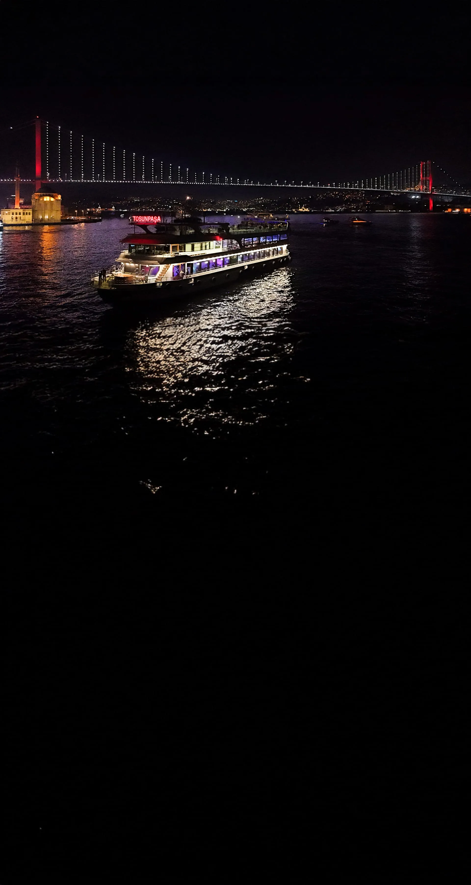
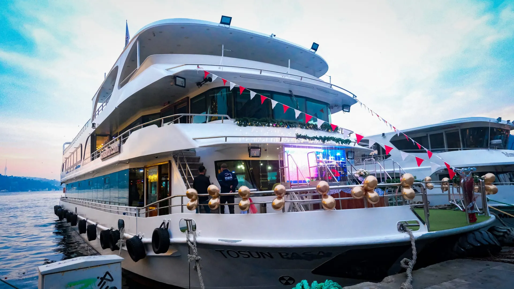
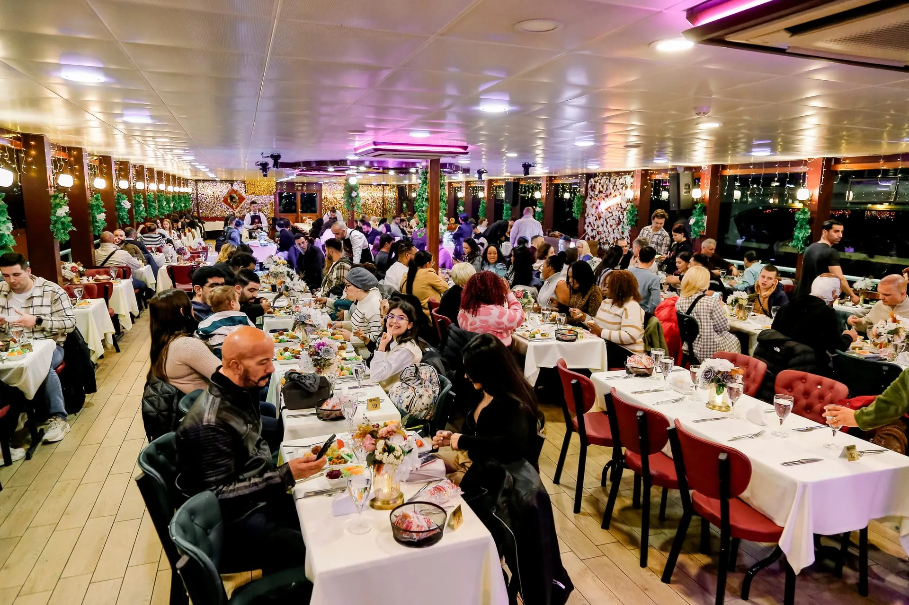

City Guide for the curious
A small library of guides, written from the water — the city's three-day arc, its candlelit corners, the palaces best seen from the strait, and a halal-family chapter for those who travel together. Less itinerary, more reading.

Start HereIstanbul 3-Day Itinerary
A measured plan — Old City on day one, the European bank and Asian shore on the next, with the Bosphorus evening cruise as the third night's centrepiece.
Read →
Romantic Istanbul
Anniversary tables, proposal locations and honeymoon weeks — the city as a stage for couples, told through its quietest corners.
Read →
Bosphorus by Night
Bridges that change colour, palaces lit from within, mosques reflected on the water — a viewing guide to the strait once the sun is gone.
Read →
Imperial Palaces from the Water
Dolmabahçe, Çırağan, Beylerbeyi — the Ottoman empire's last great houses, designed to be seen first from the sea.
Read →Best Photo Spots Along the Bosphorus
Twelve locations, the hours they're at their best, and the framing notes that turn a snapshot into a kept photograph.
Read →
Halal Istanbul — A Family Guide
Where to eat, where to stay, prayer logistics, mosque etiquette — and a Bosphorus evening you can enjoy without compromise.
Read →End the day on the water
However you spend your Istanbul days, the most quietly memorable evening tends to be the one on the strait — between two continents, with dinner, live performance and a route past the city's illuminated landmarks.
Reserve Your Evening →